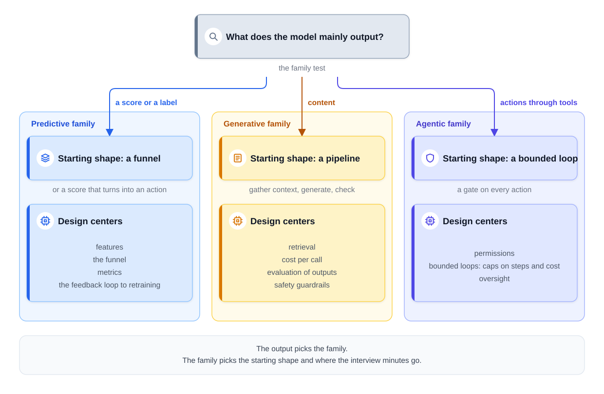
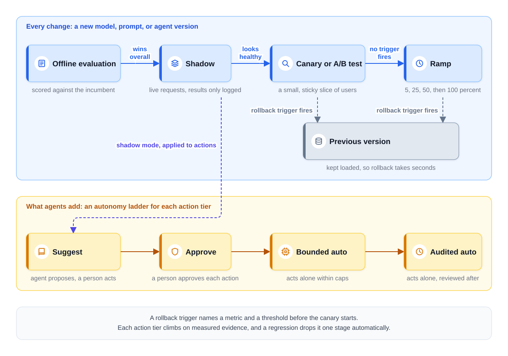

0% completed
Decision Cheat Sheets
On This Page
Know the Vocabulary
Part 1: How to Use These Sheets
Why Decisions Need a Sheet
How Each Sheet Is Built
What a Cheat Sheet Is Not
Part 2: Step 1, Frame the Problem
Sheet 1: Which Family Is This?
Part 3: Step 2, Define Success
Sheet 2: Which Offline Metric?
Part 4: Step 3, Map the Data
Sheet 3: Where Is Each Feature Computed?
Part 5: Step 4, Pick the Model
Sheet 4: Build Your Own Model or Call an API?
Sheet 5: Prompting, RAG, or Fine-Tuning?
Sheet 6: Workflow or Agent?
Sheet 7: One Agent or Several?
Part 6: Step 5, Design the Serving Path
Sheet 8: Batch, Online, or Streaming?
Sheet 9: Synchronous or Asynchronous?
Sheet 10: Vector, Lexical, or Hybrid Retrieval?
Sheet 11: Which Vector Store?
Sheet 12: How Much Grounding?
Sheet 13: Fail Open or Fail Closed?
Part 7: Step 6, Keep It Working
Sheet 14: Which Evaluation Layer Checks This?
Sheet 15: How Does Any Change Ship?
Sheet 16: How Often to Retrain?
Part 8: Step 7, Count the Costs
Sheet 17: Where Do the Savings Come From?
Sheet 18: Router or Cascade?
Sheet 19: Hosted API or Self-Host?
Part 9: The One Rule With No Variable
Part 10: All Sheets on One Page
The Summary Table
How to Drill the Sheets
FAQs
Key Takeaways
Check Your Understanding
Know the Vocabulary
This lesson uses the terms below many times. Read them once now, and come back here when a later section needs one.
- Decision: A point in a design where you must pick one of two or more options, such as batch or online inference.
- Deciding variable: The one fact about the problem that picks the answer. For example: does the prediction need information that exists only at request time?
- Default: The option you start with when nothing in the question argues against it. You say it out loud, and you say what would change it.
- Cheat sheet: One compact table for one decision. Each row names a signal you might see, the option it picks, and the reason.
- Reflex sentence: The spoken form of a sheet: "The variable here is X, so Y." The goal of this lesson is to make that sentence automatic.
- Incumbent: The version that serves users today. Every new version is compared with it.
Part 1: How to Use These Sheets
Why Decisions Need a Sheet
Most interview choices are not hard because the options are unknown. They are hard because the candidate cannot say what picks one option over another.
Suppose two candidates both choose RAG, or retrieval-augmented generation. In RAG, the system first finds relevant documents, and then the model answers from them. The first candidate says, "RAG is the best practice." The second says, "The failures are missing facts, so RAG." Only the second answer shows judgment.
That is why every sheet below leads with the deciding variable. The options matter, but the interviewer grades the reason. How to Run a Case Study uses the same idea when an interviewer disagrees with you. You restate the deciding variable, and you let the fact decide.
How Each Sheet Is Built
Each sheet covers one decision, in three parts.
-
A short paragraph names the deciding variable and links the lesson that teaches it.
-
A table lists what you might see in the question, the option it picks, and why.
-
A default names where to start when the question leaves the variable open.
The sheets follow the seven steps of the framework from Module 1. The steps are frame the problem, define success, map the data, pick the model, design the serving path, keep it working, and count the costs.
One rule gets its own part, because it has no deciding variable. Part 9 covers it. Part 10 puts every sheet on one page and shows how to drill it.
What a Cheat Sheet Is Not
A cheat sheet is not a list of answers to memorize. A memorized answer breaks when the interviewer changes one number. A deciding variable still works, because you apply it to the new number.
A cheat sheet is not a replacement for the lessons. Each row is a reminder of a full argument. If a row feels empty, go back to the lesson it links.
"It depends" is not an answer on its own. It becomes an answer when you say what it depends on, which option you start with, and what would change your mind.
Part 2: Step 1, Frame the Problem
Sheet 1: Which Family Is This?
The first decision in any AI design question is its family. The deciding variable is what the model mainly outputs. The Three Question Families gives this test. The answer picks a starting shape. It also picks the parts of the design that need the most time, which this sheet calls the design centers.
The diagram below shows the test and where each answer leads.

| The model mainly outputs | Family | Starting shape | Design centers |
|---|---|---|---|
| A score or a label, such as a fraud score or a ranked list | Predictive | A funnel that narrows many candidates, or a score that turns into an action | Features, the funnel, metrics, and the feedback loop from logs to retraining |
| Content, such as an answer, a summary, code, or an image | Generative | A pipeline that gathers context, generates, and checks the output | Retrieval, cost per call, evaluation of outputs, and safety guardrails |
| Actions taken through tools, such as issuing a refund | Agentic | A bounded loop with a gate on every action | Permissions, bounded loops that cap steps and cost, and oversight |
Notice that the design centers move as the output changes. A score is checked against a label that arrives later, so the loop from logs to retraining matters most. Content has no single correct label, so evaluation moves to the center. Every call to a large model is also billed by the token, so cost moves there too. An action changes something in the real world, so the design centers on what the system may do.
Three module introductions teach these centers: Introduction: Classic ML Design Questions for the funnel, Introduction: GenAI Product Designs for generative products, and Introduction: Agentic Systems for the loop.
Default: If a product mixes families, name the family of the part the question is about. A support assistant that only answers questions is generative. Once it can issue refunds, that part becomes agentic.
Part 3: Step 2, Define Success
Sheet 2: Which Offline Metric?
An offline metric scores a model on past data before any user sees it. Two facts decide which one to use. The first is the shape of the output: a class, a ranked list, or a number. That shape is called the problem family, and it is not the same as the three question families above. The second fact is the base rate, the share of examples that are positive. Offline Evaluation: Choosing the Metric teaches both.
| What you see | Metric to use | Why |
|---|---|---|
| A yes-or-no label with rare positives, such as fraud | Precision, recall, and PR-AUC, which sums up both across thresholds | Accuracy rewards a model that always says no |
| The first stage of a funnel, which gathers candidates | Recall@k: the share of good items found in the top k | An item the first stage misses is gone for good |
| The final order of a ranked list | NDCG, which rewards putting the best items at the top | Users mostly look at the top of the list |
| A query with one right answer | MRR, which measures how high that one answer appears | Only the position of the right answer matters |
| A number, such as minutes until delivery | MAE or RMSE, plus the p90 error | Pick by how bad a large miss is, and check the slow tail |
| Generated content with no single correct label | The evaluation pyramid in Sheet 14 | Some qualities need judgment, not arithmetic |
For a number, MAE is the average size of a miss. RMSE weighs large misses more heavily than small ones. The p90 error is the miss that 90 percent of predictions stay under.
Default: Quote every offline number against two baselines, the naive guess and the incumbent. Then say that the offline metric picks candidates, and the online experiment decides.
Part 4: Step 3, Map the Data
Sheet 3: Where Is Each Feature Computed?
A feature is one input value the model uses. Each feature can be computed in one of three places. The deciding variable is how fresh the value must be. Features and Feature Stores teaches the three paths.
| What you see | Where to compute it | Why |
|---|---|---|
| The value changes slowly, such as a restaurant's average prep time | The batch path, a scheduled job over stored data | Lowest cost per value, and hours-old values are fine |
| The value changes within minutes, such as the orders in a kitchen right now | The streaming path, a job that reads events as they happen | Fresh within seconds, at a higher cost |
| The value exists only at this moment, such as the route for this order | Request-time computation, while the user waits | No job could compute it earlier, so it needs a latency budget |
Default: Put each feature on the cheapest path that still meets its freshness need.
Part 5: Step 4, Pick the Model
Sheet 4: Build Your Own Model or Call an API?
The deciding variable is where quality comes from. Ask whether quality lives in your own interaction data, such as your logs, clicks, and outcomes. If it does, no vendor can sell it to you, so you train the model. If quality comes from general skill, such as writing, a provider already sells it. Design AI-Powered Search makes both choices in one design.
| What you see | Pick | Why |
|---|---|---|
| The model learns from your own logs and outcomes, such as a ranker, a fraud model, or a small query classifier | Build and own it | Only you have the training data, and small models run cheaply |
| The job needs general skill, such as writing a short cited answer | Call a hosted model through an API | General skill is expensive to build and easy to buy |
| Someone proposes training a new large language model (LLM) for one product feature | Adapt an existing model instead | Training a new model costs far more than one feature justifies, except at a company whose product is the model |
Default: Classic predictive models are usually trained in-house. A generative feature usually starts on a hosted API.
When to revisit: Revisit the API choice once volume is high and steady, and check the breakeven arithmetic in Sheet 19. Also revisit it when tests show a quality gap that prompts and retrieval cannot close. Prompting, Fine-Tuning, or RAG explains why training a new LLM is a red flag.
Sheet 5: Prompting, RAG, or Fine-Tuning?
Prompting changes what you tell the model in each call. RAG changes what the model can read in each call. Fine-tuning trains the model further on your own examples, so its weights change. The weights are the learned numbers inside the model.
These three tools solve different problems, so they are not rungs on one ladder. The deciding variable is what is actually failing. Start from a prompted model with a few examples, scored on an evaluation set. Then sort the failures. Prompting, Fine-Tuning, or RAG teaches this diagnosis.
| What is failing | Pick | Why |
|---|---|---|
| Missing facts, facts that change, or answers that depend on who is asking | RAG | An edit takes effect once the index picks it up, access can be filtered per user, and answers can cite sources |
| Wrong format, tone, or length, or a weak narrow skill | Prompt first, then fine-tune | Behavior lives in the weights, so fine-tuning can change it when better prompts stop helping |
| Right answers that cost too much or arrive too slowly at volume | Fine-tune or distill a small model, and put it behind a router | Quality is not the problem, so this is an economic decision |
Default: Always start with prompting. It is cheap to try and easy to undo. It also sets the baseline that every other tool must beat. Never put facts or permissions in the weights.
Sheet 6: Workflow or Agent?
A workflow runs steps that code fixed at design time. An agent runs a loop in which the model chooses each next step while the task runs. The deciding variable is whether you can write the flowchart at design time. What an Agent Actually Is teaches the same test in other words: ask who chooses the next step, and when. If code chose it at design time, you can draw the flowchart.
| What you see | Pick | Why |
|---|---|---|
| You can list the steps up front, such as transcribe, summarize, and extract action items | A workflow | Cheaper, faster, easier to test, and easier to explain |
| Each next step depends on what the last step found, such as diagnosing a customer's issue | An agent, with budgets on steps, time, cost, and actions | A workflow cannot list every path |
| Most of the task is known, and one part depends on discovery | A hybrid: a workflow shell around a small agent core | Only the open part pays the cost and risk of a loop |
Default: The hybrid. The workflow handles intake and the known paths. Only the open part enters the agent core, and every action it proposes passes an action gate in code.
The number of steps does not decide the shape. A three-step task is still an agent if the model chose the steps.
Sheet 7: One Agent or Several?
Every added agent multiplies cost, latency, and the ways the system can fail. So the deciding variable is what a second agent would buy. Orchestration and Multi-Agent Systems names three cases that earn one.
| What you see | Pick | Why |
|---|---|---|
| A long task whose growing history clutters one agent's judgment | A worker agent with a fresh, small context | Context isolation, the strongest of the three cases |
| Independent subtasks that can run at the same time | Parallel workers, whose results are then merged | They must save real waiting time or give each worker a clean context |
| Subtasks that need different prompts, tools, or model tiers | A different configuration of the same loop | Specialization by configuration |
| None of the three | One agent | A second agent would add cost and buy nothing |
Default: One competent agent, with good tools and a bounded context.
Part 6: Step 5, Design the Serving Path
Sheet 8: Batch, Online, or Streaming?
Inference means running the model to get a prediction. Two deciding variables pick when it runs. The first asks whether the prediction needs information that exists only at request time. The second asks who triggers the work: a schedule, a waiting user, or an event. Batch vs Online Inference teaches the three modes and the hybrid.
| What you see | Pick | Why |
|---|---|---|
| A slightly old answer is fine, and the inputs are known ahead of time | Batch | Predictable cost, and the job can run when servers are idle |
| The prediction needs request-time input, such as the live route or the payment itself | Online | A job that ran last night cannot use information that did not exist then |
| An event starts the work, and nobody waits on a screen, such as a menu photo upload | Streaming | It is online inference with a queue in front, so a few seconds of delay is fine |
| A large catalog, plus live context that changes the best answer | The hybrid: precompute candidates, then re-rank online | Near-online freshness at near-batch cost |
Default at catalog scale: When the catalog is large and the moment also matters, use the hybrid. A nightly job picks a few hundred candidates per user. A light model re-ranks them at request time with live context. If the re-ranker fails, the stored list still serves.
Sheet 9: Synchronous or Asynchronous?
In a synchronous design, the user's request waits on one open connection for the result. In an asynchronous design, the request creates a job and gets a job ID at once. A worker then does the work in the background. The deciding variable is generation time against the user's patience. Design a Text-to-Image Service teaches the asynchronous shape.
| What you see | Pick | Why |
|---|---|---|
| The answer finishes within a few seconds, such as a chat reply | Synchronous, streamed word by word | The first words appear quickly, and the reply finishes soon after |
| The work takes tens of seconds or more, such as four images for one prompt | An asynchronous job, with a queue and progress updates | A long open request handles crashes, retries, and priority badly |
| The work can wait several minutes, such as a meeting summary after the call | An asynchronous job | Nobody watches the screen, and the queue absorbs spikes |
Default: Stream short answers, and queue long work. Streaming makes a wait feel shorter, but it does not shrink the work. A progress bar on an open request is not a substitute for a job.
Sheet 10: Vector, Lexical, or Hybrid Retrieval?
Retrieval finds the passages a model answers from. Vector search matches by meaning, using embeddings, which are lists of numbers that capture what a text is about. Lexical search matches exact words, usually with a scoring method called BM25.
The deciding variable is the query shape. Identifiers, such as error codes and ticket numbers, carry little meaning for an embedding to capture. Paraphrased questions share meaning but few exact words. Hybrid Search and Reranking teaches both searches and how to merge them.
| What you see | Pick | Why |
|---|---|---|
| Queries full of identifiers, such as "What does error E4022 mean?" | Lexical search with BM25 | It matches exact words and favors rare ones |
| Queries that paraphrase, such as "I'm locked out of my account" | Vector search | It matches by meaning, even with no shared words |
| A mix of both shapes, which is common | Hybrid: run both, then merge with reciprocal rank fusion (RRF) | RRF merges by rank position, so the two score scales never need to match |
| The right chunk is among the candidates but not in the top few | Add a cross-encoder reranker | It reads the question and each candidate together, so it orders the top more precisely |
Default: Hybrid retrieval with RRF, using its standard settings before fitting any weights. If the right chunk is missing from the candidates, a reranker cannot help. Fix the first stage instead.
Sheet 11: Which Vector Store?
A vector store holds the embeddings and finds the nearest ones. Teams usually choose between two kinds. One is a vector extension for a database they already run, such as pgvector for Postgres. The other is a dedicated vector database.
Two deciding variables pick between them: the number of chunks, and how selective the filters are. A filter is selective when it matches only a small share of the chunks. Embeddings and Vector Databases teaches this choice. The lines in the table are rough, and they move as the tools improve.
| What you see | A reasonable starting point |
|---|---|
| A few million chunks, simple filters, and Postgres already in use | A vector extension in your existing database |
| Tens of millions of chunks, or filters that match only a small share | Test both on your own data before you decide |
| Hundreds of millions of chunks, strict permissions, and sharding needed | A dedicated vector database |
Default: Start in the database you already run, if you fit the first row. Choose by scale and filters, never by which brand sounds most impressive. Whatever you pick, the filter must run during the search, not after it.
Sheet 12: How Much Grounding?
An answer is grounded when the retrieved text supports every claim in it. Grounding checks cost time, so not every answer gets the same checks. The deciding variable is the stakes: how costly a wrong claim would be. Money, health, law, and HR topics raise the stakes. Keeping Answers Grounded teaches the four layers and how to route answers by stakes. System Design of a Legal Research Assistant turns the stakes to the maximum. There, every claim is checked before display, and the system refuses when the verifier is down.
| What you see | Pick | Why |
|---|---|---|
| Low stakes, such as how to track an order | Instructions and citations, plus a check on a sample of answers after they ship | The answer can stream at once, and a small error costs little |
| High stakes, such as a refund amount or an allergy question | A synchronous check of every claim before the answer ships | A claim that still fails after one retry does not ship |
| The highest stakes, such as legal research | Every citation checked before display, and a refusal rather than a guess | One invented citation can cause real harm, and courts have sanctioned lawyers for filing them |
Default: Citations on every answer, with synchronous per-claim checks only on high-stakes paths. If the verifier is down, a high-stakes claim cannot pass its check. So it does not ship, and the user gets a useful refusal with a human handoff.
Sheet 13: Fail Open or Fail Closed?
Some checks guard an action, such as a fraud check on a payment. When the check cannot run, the system can fail open, which lets the action through. Or it can fail closed, which blocks or holds it. The deciding variable is which error costs more: blocking a good user, or letting a bad action through.
This is a product and policy call, made before any outage. Model Serving Basics teaches the choice, and Design Fraud Detection applies it to payments. Design a ChatGPT-Style Assistant writes the policy for a content safety check.
| What you see | Pick | Why |
|---|---|---|
| A small possible loss, such as a small payment from a long-time customer | Fail open | Blocking an honest customer costs more than the risk |
| A large possible loss, such as a large payment | Fail closed, or send it to an extra check | One missed case costs too much |
| A permission or privacy check | Fail closed, always | Without the check, nothing stops a leak |
| A content safety check in a chat product | A written policy for each risk level | For example, new accounts fail closed, while long-standing accounts fail open with a simpler check |
Default: Mix the two by risk, and write the policy down in advance. Alert whenever a fallback runs, because a silent fallback can run for days.
Part 7: Step 6, Keep It Working
Sheet 14: Which Evaluation Layer Checks This?
Generated content has no single correct label, so evaluation uses three layers, shaped like a pyramid. The deciding variable is whether code can assert the check, or whether it needs judgment. Evaluating LLM Systems teaches the pyramid.
| What you see | Layer | Why |
|---|---|---|
| A rule code can test, such as the format, a required citation, or a hard limit | Layer 1: programmatic checks | Almost free, so they run on every output |
| A quality that needs judgment, such as tone, or whether the cited policy supports the claim | Layer 2: an LLM judge with a written rubric | It scales judgment, but it must be calibrated against human scores |
| A failure nobody has listed yet, or the human scores a judge needs | Layer 3: human evaluation of a small sample | People find new failure modes and anchor the judge |
Default: Use all three layers, in different amounts. A code product leans on Layer 1, because it can compile and test its own output. A golden set, a fixed set of test cases with known good behavior, runs on every change.
When a person finds a new failure, it moves down the pyramid. A failure code can detect becomes a Layer 1 check. A failure that needs judgment becomes a rubric item for the judge.
Sheet 15: How Does Any Change Ship?
Every change climbs the same ladder: a new model, a retrained model, a new prompt, or a new agent version. At each rung, a named metric with a threshold decides whether the change moves up. Model Serving Basics teaches the ladder. Evaluating and Controlling Agents adds what agents need.
The diagram below shows the ladder, and the second ladder that agents add.

| Rung | What happens | It moves up when |
|---|---|---|
| 1. Offline evaluation | The candidate and the incumbent are scored on the same held-out data or golden set | It wins overall and loses in no important segment |
| 2. Shadow | It runs on live requests, but only its logs see the results | Its results, latency, and errors look healthy next to the incumbent |
| 3. Canary or A/B test | A small slice of users gets it, and each user always sees the same version | No rollback trigger fires, and where practical, an A/B test shows a gain |
| 4. Ramp | The share grows in steps, such as 5, 25, 50, and then 100 percent | Each step stays healthy long enough to collect data |
A rollback trigger names a metric and a threshold before the canary starts. One example is, "Roll back if checkout conversion drops 2 percent." When it fires, serving points back at the previous version.
A canary asks whether anything is broken. An A/B test asks whether the change is better on the business metric. A routine retrain of the same model still passes offline evaluation, but it often skips the A/B test. Shadow and a canary are usually enough. A prompt change runs on the golden set offline, then goes to a canary.
What agents add: An agent also climbs a second ladder, for autonomy, one action tier at a time. The stages are suggest, approve, bounded auto, and audited auto. In the suggest stage, the agent proposes actions while a person does the work, which is shadow mode for actions. Promotion needs measured thresholds, and demotion after a regression is automatic.
Sheet 16: How Often to Retrain?
A deployed model gets worse as the world changes. This decay is called drift, and retraining responds to it. The deciding variable is the measured decay rate: how fast quality drops between retrains. Adversarial pressure speeds the decay, because an adversary changes behavior to get past the model. Monitoring, Drift, and Retraining teaches the three ways to retrain.
| What you see | Pick | Why |
|---|---|---|
| Quality decays slowly and steadily | A schedule set by measurement, such as every week or two | Retraining more often adds cost for little gain |
| An adversary adapts, as in fraud | A faster schedule, often daily or weekly at first, plus triggers from the monitors | The model may decay within days |
| An adversary adapts faster than any retrain can | Fast rules and switches beside the model | A new trick can spread in hours, while a retrained model takes days |
| A sudden change, such as a launch in a new city | A triggered retrain, after checking the data pipelines | Many drift alerts turn out to be broken pipelines |
| Labels arrive within minutes, and a stale model loses money, as in ads | Near-online learning, with input checks, limits on each update, and fast rollback | Fresh models clearly pay for the extra risk |
Default: A measured schedule plus a trigger, and every candidate climbs the ladder from Sheet 15. Pure online learning, which updates the serving model continuously, is rarely the answer. A single bad batch of data instantly becomes a bad model, because there is no evaluation gate between the new data and the users. Near-online learning in ads adds a small gate back. It pushes a new version every few minutes to every hour, and each push first passes a quick check on recent traffic. Design Fraud Detection and Design Ad Click Prediction show both ends of this range. System Design of Harmful Content at Platform Scale adds the fast rules beside the models.
Part 8: Step 7, Count the Costs
Sheet 17: Where Do the Savings Come From?
When an LLM feature costs too much, the standard techniques sit on three shelves, tried in order. The deciding variable is simple: the cheapest call is the one that never happens. Avoiding a call beats speeding one up, as long as the reused answer is correct. Serving Optimizations teaches the three shelves and each technique on them.
| Shelf, in order | Techniques | Works with a hosted API? |
|---|---|---|
| 1. Avoid calling the model | A semantic cache for answers that are the same for everyone, routing easy requests to a small model, and shorter prompts and outputs | Yes |
| 2. Tune the engine | Continuous batching, paged attention, and prefix caching | Mostly when you self-host, although discounted prompt caching gives part of the benefit |
| 3. Change the model | Quantization, distillation, and speculative decoding | Mostly when you self-host |
The middle shelf keeps the GPU full and reuses work on prompt openings that many requests share. The bottom shelf stores the weights with fewer bits, or trains a small model to imitate a large one. Speculative decoding lets a small draft model guess tokens that the large model then checks.
Default: Start with the top shelf, and make it safe. A semantic cache reuses a stored answer for a question with the same meaning. So never cache a personal answer, such as "Where is my order?" Give each technique a measured number and a quality check before it ships.
Sheet 18: Router or Cascade?
A router and a cascade both send easy requests to a cheap model. The deciding variable is when you can tell that a request is easy: from the request alone, or only from the cheap model's answer. Serving Optimizations compares the two.
| What you see | Pick | Why |
|---|---|---|
| Request types are easy to tell apart | A router, which decides before any model answers | Each request gets only one answer |
| Answers are easy to check, such as a required format or a cited policy | A cascade, which tries the small model first and moves failed answers up | It sees the answer before it decides |
Default: Either way, run the golden set through the cheap path on every change. Also track how often requests move up, because a shift means the line between easy and hard has moved.
Sheet 19: Hosted API or Self-Host?
Self-hosting means running a model on GPUs that you rent or own. GPUs are the chips that run the model. Who runs the model is part of the model choice in Step 4. This sheet sits under Step 7 because the numbers that decide it are costs. The deciding variable is sustained token volume against the cost of a fleet at its target utilization. Utilization is the share of the fleet doing useful work. A common target is roughly 60 to 80 percent at peak, which leaves room for spikes.
Two gates sit on top of the price. One is data rules, sometimes called governance. The other is a team that can run the fleet. Inference Economics teaches the breakeven. Capstone: The Inference Bill compares a self-hosted fleet with the API bill for one path.
| What you see | Pick | Why |
|---|---|---|
| Low or spiky volume, or the task needs the strongest frontier model | A hosted API | You pay only for the tokens you use |
| High, steady volume, and a smaller open model meets the quality target | Self-hosting, if a team can run the fleet | The fixed fleet cost spreads over many tokens |
| Data must stay inside your own systems | Self-hosting, unless a provider's data terms meet your rules | Data rules can override the price |
The breakeven: Divide the fleet's daily cost by the API cost of one request. The result is the daily volume at which the two cost the same. Then add the people who run the fleet, because the hardware number leaves them out.
Default: A mix. The frontier API serves the hard, lower-volume paths. A small model serves the high-volume paths, self-hosted only if the numbers and the team support it. If the fleet is overloaded or down, its overflow goes to a hosted small model.
Part 9: The One Rule With No Variable
Every sheet above has a deciding variable. This one does not, because it is a rule, not a trade-off.
Permissions live in code, inside retrieval and inside the tool runtime. They never live in the prompt. They are never checked after generation. When a permission check cannot run, the system fails closed.
Three lessons give the reasons.
- Not in the prompt. A model can be talked out of an instruction, and text hidden in a document can override one. Tool Use and Function Calling puts policy inside each tool's code. Every tool runs under the user's own permissions.
- Not after generation. A filter on the finished answer is too late, because the model has already read the restricted text. Capstone: Enterprise Document Q&A enforces permissions inside the index query, so a restricted chunk is never returned.
- Not in the weights. The weights are the same for every user, so they cannot be filtered per user. Prompting, Fine-Tuning, or RAG explains why.
In the document capstone, the service sometimes cannot look up a user's groups. It then fails closed and answers from public content only. The same rule holds for any permission or privacy check.
Part 10: All Sheets on One Page
The Summary Table
The table below compresses every sheet into one row. The left column names the decision. The other columns hold the deciding variable, the default, and the lesson.
| Decision | Deciding variable | Default | Lesson |
|---|---|---|---|
| Question family | What the model mainly outputs: a score or label, content, or actions | Name the family of the part being asked about | The Three Question Families |
| Offline metric | The shape of the output, and the base rate | Two baselines; offline picks candidates, online decides | Offline Evaluation |
| Where a feature is computed | How fresh the value must be | The cheapest path that meets the need | Features and Feature Stores |
| Build or call an API | Whether quality lives in your own interaction data | Predictive in-house; generative on an API, revisited at high, steady volume | Design AI-Powered Search |
| Prompting, RAG, or fine-tuning | What is actually failing | Prompt first, as the measured baseline | Prompting, Fine-Tuning, or RAG |
| Workflow or agent | Whether the flowchart can be written at design time | A workflow shell with an agent core | What an Agent Actually Is |
| One agent or several | What a second agent would buy | One agent | Orchestration and Multi-Agent Systems |
| Batch, online, or streaming | Request-time information, and who triggers the work | The hybrid at catalog scale with live context | Batch vs Online Inference |
| Synchronous or asynchronous | Generation time against the user's patience | Stream short answers; queue long work | Design a Text-to-Image Service |
| Vector, lexical, or hybrid | Query shape: identifiers or paraphrase | Hybrid with RRF | Hybrid Search and Reranking |
| Vector store | Number of chunks, and how selective the filters are | The existing database at a few million chunks | Embeddings and Vector Databases |
| Grounding | Stakes | Citations everywhere; synchronous per-claim checks on high stakes | Keeping Answers Grounded |
| Fail open or fail closed | Which error costs more | Mixed by risk; permission checks always fail closed | Model Serving Basics |
| Evaluation layer | Whether code can assert the check, or it needs judgment | All three layers, plus a golden set | Evaluating LLM Systems |
| Shipping a change | A named metric and threshold at each rung | Offline, shadow, canary or A/B, ramp; agents add autonomy | Model Serving Basics and Evaluating and Controlling Agents |
| Retraining cadence | Measured decay, plus adversarial pressure | A measured schedule plus a trigger | Monitoring, Drift, and Retraining |
| Where savings come from | The cheapest call is the one never made | The top shelf first: cache and route safely | Serving Optimizations |
| Router or cascade | Whether the request or the answer shows the difficulty | A golden set on the cheap path | Serving Optimizations |
| API or self-host | Sustained volume against fleet cost, gated by data rules and team | A mix, with overflow to a hosted small model | Inference Economics |
| Where permissions live | None: it is a rule | In retrieval and the tool runtime, failing closed | Capstone: Enterprise Document Q&A and Tool Use and Function Calling |
How to Drill the Sheets
The point of the sheets is reflex. In the room, the deciding variable should come to mind before the options do. Drill in five steps.
Step 1: Cover the right-hand columns. Hide the deciding variable, the default, and the lesson in the summary table.
Step 2: Read one decision. Read only the left column of one row.
Step 3: Say the reflex sentence out loud. "The variable here is X, so Y." Then add the default, and what would change it.
Step 4: Check, and mark the misses. Uncover the row. Mark it if you missed the variable, even if you picked the right option.
Step 5: Revisit the lesson for each miss. Read the linked section, and drill that row again the next day.
The schedule in Introduction: Rapid Review puts the sheets in the final week before the interview. A short daily drill, such as about ten minutes a day, keeps every row fresh. One long session the night before is a poor substitute, because recall after a gap is what the interview tests.
Here is one reflex sentence, as it might sound in an interview.
"The variable here is what is failing. The model gives an old refund window, so this is missing knowledge, and the fix is RAG over the policy pages. If evals later show tone problems, I would fix the prompt first, then fine-tune."
Notice that the sentence names the fact before the tool. It also says what evidence would change the answer.
FAQs
Q: Should I memorize every row of the summary table?
No. Memorize the deciding variables. The options and defaults follow from them, and the linked lessons hold the reasons.
Q: Is "it depends" ever a good answer?
Yes, if you finish the sentence. Say what it depends on, which option you would start with, and what evidence would change it.
Q: What if the question gives no clue about the deciding variable?
Ask the interviewer, or state an assumption out loud. For example: "I'll assume the refund policies change every month. That makes this a knowledge problem, so I'd use retrieval."
Q: Do the defaults hold at every company?
No. A default is a starting point, and the numbers in these sheets are rough. State the default, then let the facts of the question move you.
Key Takeaways
- Every decision has a deciding variable. It is the one fact that picks the answer, and naming it is what the interviewer grades.
- The sheets follow the seven framework steps. The family comes first, then the metric, the data, the model, the serving path, the upkeep, and the costs.
- Many defaults are hybrids. Examples are a workflow shell with an agent core, precomputed candidates with an online re-rank, hybrid retrieval, and a mix of API and self-hosted models.
- Permissions are a rule, not a trade-off. They live in retrieval and the tool runtime, never in the prompt and never after generation, and they fail closed.
- Every change ships on one ladder. It runs from offline evaluation against the incumbent, through shadow and a canary or A/B test, to a ramp. Agents add an autonomy ladder.
- Drill for reflex. Cover the right-hand columns, say "The variable here is X, so Y" out loud, and revisit the lesson for every miss.
- In a system design interview, name the deciding variable before the option, state your default, and say what evidence would change it.
The next lesson, Conclusion: What You Now Know, and Where to Go Next, looks back at what each module taught you. It also suggests how to keep practicing after the course.
Check Your Understanding
1. An interviewer says, "Our assistant still quotes the old refund window after last week's policy change. Should we fine-tune?" What do you answer?
Show answer
No, because the deciding variable is what is failing, and this failure is missing knowledge. Facts that change belong in retrieval, where an edit takes effect once the index picks it up. Fine-tuning would memorize the facts unevenly, and a new training run would be needed after every change.
2. A team plans to remove restricted text from the model's answer after the model writes it. What is wrong with this plan?
Show answer
It breaks the one rule that has no deciding variable. Permissions are enforced inside retrieval, never after generation. By the time the answer exists, the model has already read the restricted text, and it can leak it. The filter belongs inside the index query, and it fails closed.
3. A home screen shows 20 dishes from a catalog of millions. The list should also reflect which restaurants are open right now. Which inference mode fits?
Show answer
The hybrid: precompute candidates in batch, then re-rank them online. A nightly job picks a few hundred candidates for each active customer. At request time, a light model re-ranks them with live context, such as open restaurants and the time of day. If the re-ranker fails, the stored list still serves.
4. A support task starts with the same intake steps every time. Then the next check depends on what the last lookup found. Workflow or agent?
Show answer
A hybrid: a workflow shell around a small agent core. The intake steps can be written as a flowchart at design time, so they stay in a workflow. The diagnosis cannot, so only that part becomes a bounded agent loop. Every action it proposes passes an action gate in code.
0 Comments
No comments yet. Be the first to start the discussion!
Reading Progress
0%
On This Page
Know the Vocabulary
Part 1: How to Use These Sheets
Why Decisions Need a Sheet
How Each Sheet Is Built
What a Cheat Sheet Is Not
Part 2: Step 1, Frame the Problem
Sheet 1: Which Family Is This?
Part 3: Step 2, Define Success
Sheet 2: Which Offline Metric?
Part 4: Step 3, Map the Data
Sheet 3: Where Is Each Feature Computed?
Part 5: Step 4, Pick the Model
Sheet 4: Build Your Own Model or Call an API?
Sheet 5: Prompting, RAG, or Fine-Tuning?
Sheet 6: Workflow or Agent?
Sheet 7: One Agent or Several?
Part 6: Step 5, Design the Serving Path
Sheet 8: Batch, Online, or Streaming?
Sheet 9: Synchronous or Asynchronous?
Sheet 10: Vector, Lexical, or Hybrid Retrieval?
Sheet 11: Which Vector Store?
Sheet 12: How Much Grounding?
Sheet 13: Fail Open or Fail Closed?
Part 7: Step 6, Keep It Working
Sheet 14: Which Evaluation Layer Checks This?
Sheet 15: How Does Any Change Ship?
Sheet 16: How Often to Retrain?
Part 8: Step 7, Count the Costs
Sheet 17: Where Do the Savings Come From?
Sheet 18: Router or Cascade?
Sheet 19: Hosted API or Self-Host?
Part 9: The One Rule With No Variable
Part 10: All Sheets on One Page
The Summary Table
How to Drill the Sheets
FAQs
Key Takeaways
Check Your Understanding